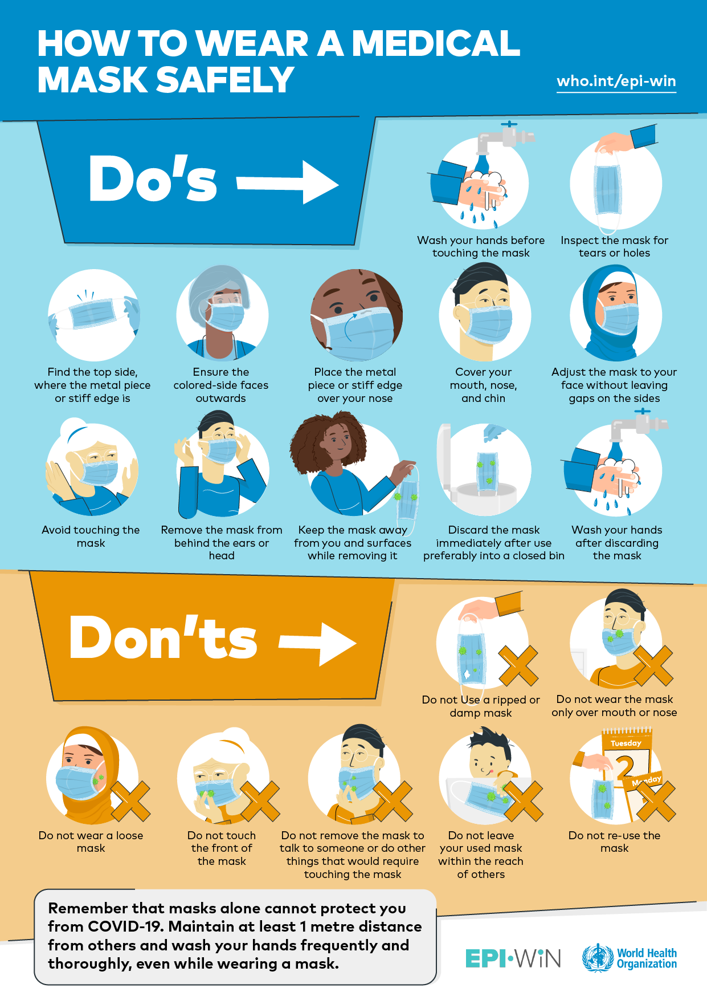

What's a really free market?
In the simplest terms, a free market is where everything is well, free!
Items and services at the free market are not to be exchanged for currency, but freely given away or traded for.
For our specific operation, that includes donations as well as folks set up with their own goods and services they'd like to provide.
In the past, we have provided mending services, tarot readings, patch installation, portraits, and a great many goods!
(For more information on donations, click here)
RRFMs (Really Really Free Markets) vary from place to place, and as community-based projects, so do their goods and services.
Ideally, this results in a RRFM that is tailored to the needs of a community and brings people closer together as well as giving them access to collaboration without so many restraints of capitalism.
Read more about Really Really Free Markets and their history here!
Who is a free market for? Am I allowed?
You're allowed! An RRFM is for anyone who wants to engage with their community and take part in a (however temporary,) gift economy. Our RRFM welcomes all folks so long as they are gracious to their neighbors.
We have no income requirements, you do not need to be in dire need of goods and services, and all are welcome to take as much as they like. We proudly work with Viper's Sanctuary, a local and queer-owned establishment that provides meals and services for the community in downtown Honolulu, for any goods left over at the end of an event.
RRFM HI is open door, however we do emphasize our queer and trans neighbors, with emphasis placed on gender-affirming gear, queer media, and working with trans and queer individuals and services.
What are the rules?
While we can't speak for other RRFMs, RRFM HI has two big rules:
- Don't pay for anything
- Wear a mask properly
If you can do those two things, you're all set! We provide as many KN95 masks as we're able, though supplies are limited so consider wearing your won (if you're not wearing one already!) When indoors, we are a MASK MANDATORY space, and being COVID conscious allows our disabled and at-risk neighbors to access the RRFM safely, and lets you look around without getting sick! For researched and thorough information about COVID-19, we highly recommend Hazel Newlevant's COVID zine.
